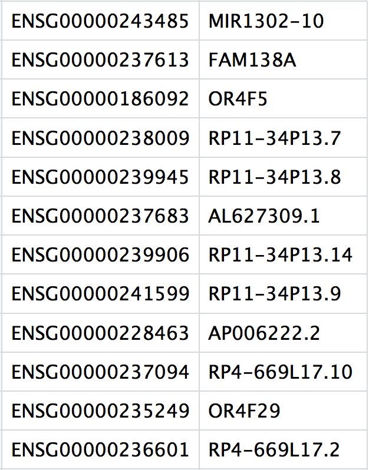

library(Matrix)
library(readr)Creating count data object
Generally, all single-cell RNA-seq datasets, regardless of technology or pipeline, will contain three files:
- a file with the gene IDs, representing all genes quantified
- a file with the cell IDs, representing all cells quantified
- a matrix of counts per gene for every cell
We can explore these files by clicking on the data/ctrl_raw_feature_bc_matrix folder:
barcodes.tsv: cellular barcodes present in dataset

features.tsv: IDs of quantified genes

matrix.mtx: a matrix of count values, where rows are associated with the gene IDs above and columns correspond to the cellular barcodes. Note that there are many zero values in this matrix.

We can create a count matrix using these files. However, instead of creating a standard count matrix, we will create a sparse matrix to improve the amount of space, memory and CPU required to work with our huge count matrix.
We will use readMM() function from the Matrix package to turn our standard matrix into a sparse matrix. The genes.tsv file should correspond to the genes or row names of the matrix, while barcodes.tsv corresponds to the cells or columns.
# Read in `matrix.mtx`
counts <- readMM("../data/ctrl_raw_feature_bc_matrix/matrix.mtx.gz")
# Read in `genes.tsv`
genes <- read_tsv("../data/ctrl_raw_feature_bc_matrix/features.tsv.gz",
col_names = FALSE)
gene_ids <- genes$X1
# Read in `barcodes.tsv`
cell_ids <- read_tsv("../data/ctrl_raw_feature_bc_matrix/barcodes.tsv.gz",
col_names = FALSE)
cell_ids <- cell_ids$X1Then we can add row names to the count matrix to be the gene IDs and the column names of the count matrix to be the cell IDs.
# Make the column names as the cell IDs and the row names as the gene IDs
rownames(counts) <- gene_ids
colnames(counts) <- cell_idsWe could use this data for downstream QC analysis. However, this would take a long time if we had multiple samples. A quicker way to load multiple samples is to use the Seurat R package, which has a specific function for reading in 10X data, called read10X().
Note
If using other droplet-based methods for library preparation, the above method would be needed to perform the QC. We have additional materials available based on creation of the count matrix in this way.